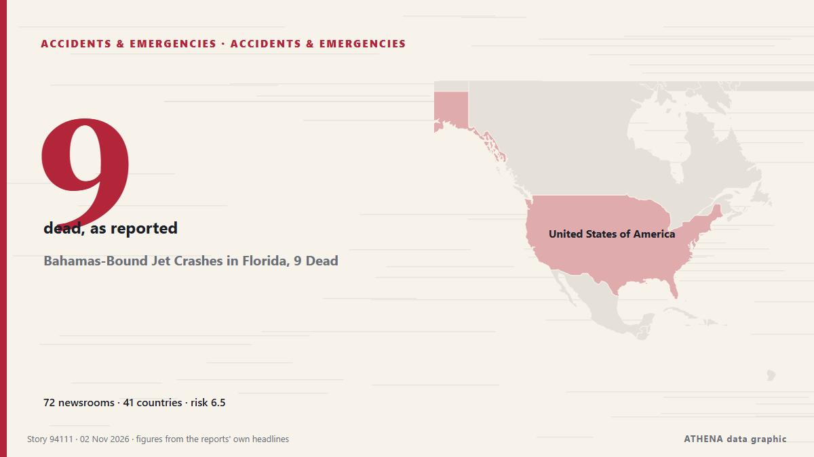

Bahamas-Bound Jet Crashes in Florida, 9 Dead

A privately owned Learjet crashed near Military Trail in Florida on 1 November, killing nine people. from The Rio Times
Reported independently by 72 outlets in 41 countries since 31 Oct, first by Indian Express; coverage is at its peak. ATHENA rates the risk high (6.5/10), driven mainly by the severity of the harm described and its geographic and sector reach. Confidence is 86% (high), with 72 independent outlets corroborating it and an average source reliability of 74%. Outlets by country: United Kingdom (7), Australia (4), United States (4). Coverage: 31 Oct to 2 Nov, 63 hours.
Why it matters: This tracker follows the conflict involving Israel, Gaza, the West Bank and Lebanon — military events, humanitarian conditions and diplomacy — as covered by outlets around the world.
What changed: 84 new reports from 69 outlets in the 24 hours to 2 Nov.
First reported as: Private jet crashes in Florida, leaving multiple dead
AutomatedSelected, grouped and scored by ATHENA's published method from 35 independent outlets. The headline is the outlet's own; ATHENA's sentences follow fixed patterns - no generative AI writes them. How it works →
How to read this page
- What you are reading
- 72 outlets in 41 countries reported this event. The reports below are listed in the order they appeared; each headline opens the original article. ATHENA writes none of the reports.
- Our reading
- For the record — The reports describe a completed, domestic, commercial or personal matter. We list it so you can see who reported it and when. We are not tracking a risk of wider conflict here.
- How much evidence
- Strong Many independent outlets in many countries describe the same event.
After repeats, off-topic items and stale reports are removed, 28 of the 40 listed reports are counted; 88% of the headlines match the event.
- What this does not mean
- ATHENA measures how an event is reported, not whether it is true. This is not a forecast, a judgement on who is right, or advice.
- What would change it
- Reports from other independent outlets showing a different development, or a firm confirmation or denial from an official source.
Reading R2 · refreshed with every update of this page. ATHENA has not yet published a track record for these readings; when it does, it will be linked here.
At a glance
Selected, scored and written by ATHENA's published methodology. No editor intervenes in individual events. How this is produced ›
| 31 Oct 03:01 UTC | 1 |
|---|---|
| 31 Oct 06:01 UTC | 1 |
| 31 Oct 09:01 UTC | 0 |
| 31 Oct 12:01 UTC | 0 |
| 31 Oct 15:01 UTC | 0 |
| 31 Oct 18:01 UTC | 0 |
| 31 Oct 21:01 UTC | 0 |
| 01 Nov 00:01 UTC | 0 |
| 01 Nov 03:01 UTC | 0 |
| 01 Nov 06:01 UTC | 1 |
| 01 Nov 09:01 UTC | 0 |
| 01 Nov 12:01 UTC | 0 |
| 01 Nov 15:01 UTC | 0 |
| 01 Nov 18:01 UTC | 5 |
| 01 Nov 21:01 UTC | 29 |
| 02 Nov 00:01 UTC | 15 |
| 02 Nov 03:01 UTC | 15 |
| 02 Nov 06:01 UTC | 13 |
| 02 Nov 09:01 UTC | 2 |
| 02 Nov 12:01 UTC | 3 |
| 02 Nov 15:01 UTC | 0 |
| 02 Nov 18:01 UTC | 2 |
| 01 Nov 20:56 UTC | 3.8 |
|---|---|
| 01 Nov 21:06 UTC | 2.5 |
| 01 Nov 21:42 UTC | 5.8 |
| 01 Nov 22:05 UTC | 6.4 |
| 01 Nov 22:34 UTC | 6.8 |
| 01 Nov 22:57 UTC | 6.4 |
| 02 Nov 03:42 UTC | 5.9 |
| 02 Nov 08:57 UTC | 7.0 |
| 02 Nov 11:18 UTC | 6.4 |
| 02 Nov 18:40 UTC | 6.5 |
Why these numbers
Importance
Risk
Confidence
The reporting — who reported it, and when
headline as published · opens the original- Indian Express · IndiaA 13-year-old goal & a t-shirt: Manisha realises departed father’s dream
- Manchester Evening News · United KingdomThe husband and wife team bringing ‘aspirational’ private jet experiences to Manchester Airport
- APA (English) · AzerbaijanPrivate jet crashes in Florida, leaving multiple dead
- The Canadian Press (via CityNews) · CanadaJet nosedives and erupts into fireball near busy roadway in South Florida. All 9 on board died
- Sydney Morning Herald · Australia‘We’re going to crash’: Chilling audio captures final seconds of Florida jet disaster
- Sydney Morning Herald · AustraliaBusiness jet with nine people on board crashes in Florida
- The Independent · United KingdomAll 9 aboard business jet killed after fiery crash in Palm Beach County
- NEWS.am (English) · ArmeniaBusiness jet carrying nine people crashes in Florida: No survivors
- The Jerusalem Post · IsraelFAA: Plane crashes in Palm Beach, Florida after rapid dive, killing nine passengers
- The Guardian · United KingdomAll nine people aboard business jet that crashed in Florida have died
- Business Insider · United StatesWhat we know so far about the Learjet 60 private plane that crashed in Florida
- TASS (English) · RussiaNine people killed in business jet crash in Palm Beach, USA — US Transportation Secretary
- CBC News (alternative feed) · CanadaAll 9 aboard killed after plane crashes in Florida, officials say
- Forbes Business · United StatesLearjet Crashes In Florida’s Palm Beach County, Killing 9
- Jamaica Observer · JamaicaNine dead as Learjet slams into Florida roadside — US official
- Hespress English · MoroccoNine dead as Learjet slams into Florida roadside
- Anadolu Agency (English) · TurkeyAircraft crashes in residential area of Florida, killing all 9 on board
- Irish Mirror · IrelandFlorida plane crash: Private jet carrying nine crashes into trailer park sparking huge fireball
- Times of India · India9 dead as Florida jet crashes near busy roadway
- ABC News Australia · AustraliaNine die as business jet crashes on Florida roadside
- Simple Flying · United StatesBreaking: Learjet 60 With 9 People Onboard Fatally Nose Dives In Missile-Like Crash Near Mar-A-Lago
- TRT World · TurkeyNine killed as private Learjet crashes in Florida residential area
- New Straits Times · MalaysiaNine dead in small plane crash near Trump's Florida home
- PBS NewsHour · United StatesAll 9 people aboard a jet that crashed in Florida have died, transportation secretary says
- SBS News · Australia'Horrific tragedy': Nine dead after plane crash in US neighbourhood
- The Irish News (Belfast) · United KingdomNine killed in Florida plane crash
- Belfast Telegraph · United KingdomNine killed in Florida plane crash
- APA (English) · AzerbaijanNine people dead in Learjet crash in south Florida, officials say - UPDATED
- Xinhua (English) — page reader · China9 killed in plane crash in U.S. Florida: transportation secretary
- The Straits Times · SingaporeNine killed in Learjet plane crash near Trump’s Florida home
- Liverpool Echo · United KingdomNine people killed after private jet carrying nine crashes into trailer park
- Business Recorder · PakistanNine people dead in Learjet crash in south Florida, officials say
- Al Jazeera English · QatarNine people dead after Learjet crashes in Florida
- Xinhua (English) — page reader · China9 killed in plane crash in U.S. Florida: transportation secretary
- Manchester Evening News · United KingdomPilot's chilling final words before tragic Learjet crash in Florida killed all nine on board
- France 24 English · FranceNine killed as business jet crashes into South Florida neighbourhood
- Gulf News · United Arab EmiratesNine killed in plane crash near Trump's Florida home
- Indian Express · India‘We’re going to crash’: 9 dead as business jet plunges in Florida
- The Korea Times · South KoreaAll 9 people aboard a jet that crashed in Florida have died, transportation secretary says
- The Rio Times · BrazilBahamas-Bound Jet Crashes in Florida, 9 Dead